(a)
Determine the value of worst case noise margin for low input.
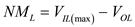
Substitute  for and
for and  for
for  in the equation.
in the equation.
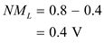
Thus, the value of worst case noise margin for low input,  is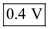.
is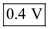.
(a)
Determine the value of worst case noise margin for low input.
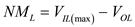
Substitute for and for in the equation.
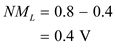
Thus, the value of worst case noise margin for low input, is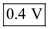.
Determine the value of worst case noise margin for high input.
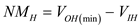
Substitute  for and
for and  for
for  in the equation.
in the equation.
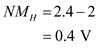
Thus, the value of worst case noise margin for high input,  is.
is.
(b)
Consider that the inverter is in the 1-state 50% of the time and in the 0-state 50% of the time.
Determine the value of average static power dissipation in the typical circuit.
Substitute  for
for  ,
,  for and 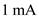 for in the equation.
for and 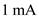 for in the equation.
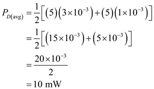
Thus, the value of average static power dissipation in the typical circuit,is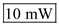.
(c)
Determine the value of dynamic power dissipation.
Substitute 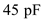 for  , 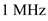 for
, 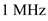 for  and
and  for
for  in the equation.
in the equation.
Thus, the value of dynamic power dissipation, is 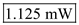.
(d)
Determine the value of propagation delay time in the typical circuit.
Substitute for and for in the equation.
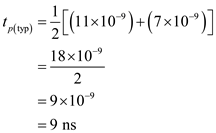
Thus, the value of propagation delay time in the typical circuit, is 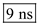.
Determine the value of worst case propagation delay time.
Substitute 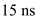for and 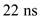 for in the equation.
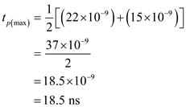
Thus, the value of worst case propagation delay time, is 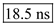.